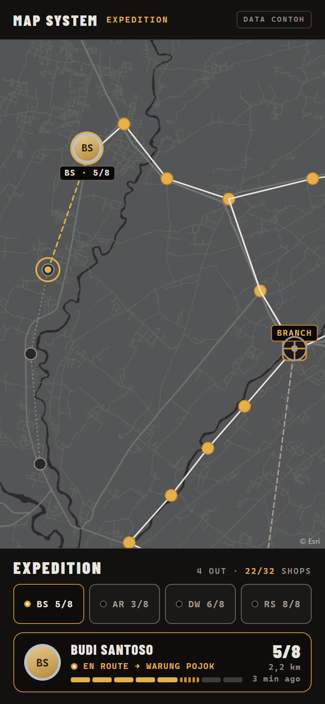
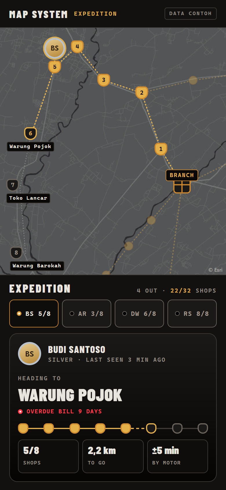

Today the Map System shows each salesman as one blue dot at his last sale. Both looks below use the same real map and the same data the app already saves: a point at every sale, his plan for the day, and his next shop.
Frozen frames (= Lite Mode). On the live link a sale "arrives" every few seconds: the salesman glides to that shop, it lights up gold, his count goes up.
A · SQUAD LIST
Like the squads in The Walking Dead: Survivors. A straight dashed march line from where he was last seen to his next shop. Under the map: tap a salesman, see one row (his shops 5/8, how far, last seen). The map gets more room.

B · TRAVEL CARD MY PICK ON PHONE
Like walking the map in Last Day on Earth. Every shop on his route is a numbered pin with its name, he stands on the one he just sold at. The card says where he is heading in big letters, warns you (red: overdue bill), shows his 8 shops as a chain, how far and how long.
